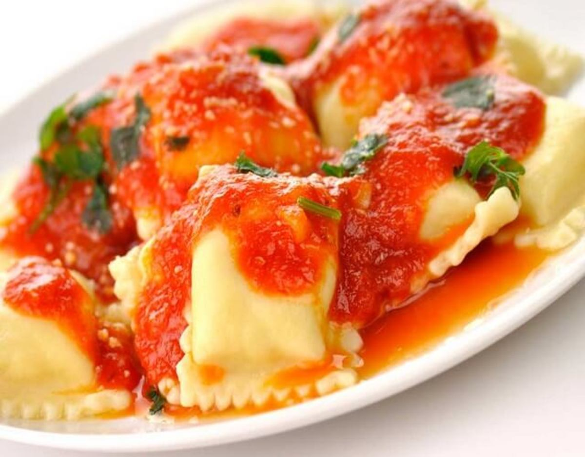

Ravioles

Facil y sabroso
Los ravioles son una pasta italiana rellena, generalmente en forma de pequeños cuadrados o círculos. Pueden estar rellenos de una variedad de ingredientes como carne, queso, espinacas, o incluso combinaciones más creativas como calabaza y amaretti. Se cocinan en agua hirviendo y se sirven con diferentes tipos de salsas, como salsa de tomate, pesto, o mantequilla y salvia. Son un plato versátil y delicioso, perfecto para cualquier ocasión.
Ingredientes para la masa
- 300 gramos de harina de trigo
- 3 Huevos
- 1 cucharada de aceite de oliva
- 1/2 cucharadita de sal
Ingredientes para el relleno
- 300 gramos de carne picada (puede ser de ternera, cerdo o una mezcla)
- 1 huevo
- 2 cucharadas de pan rallado
- 50 gramos de queso parmesano ralladol
- 2 dientes de ajo, picados
- Perejil picado
- Sal y pimienta al gusto
Ingredientes para la salsa (opcional)
- 400 gramos de tomate triturado
- 2 dientes de ajo
- Aceite de oliva
- Albahaca fresca
Pasos para su elaboracion
- Masa: Mezcla harina, huevos, aceite y sal. Amasa y deja reposar 30 min.
- Relleno: Mezcla carne, huevo, pan rallado, parmesano, ajo, perejil, sal y pimienta.
- Formar ravioles: Estira la masa, coloca el relleno, dobla y corta.
- Cocinar: Hierve agua con sal, cocina los ravioles 3-4 min.
- Salsa (opcional): Sofríe ajo en aceite, añade tomate y cocina 10-15 min. Agrega albahaca.